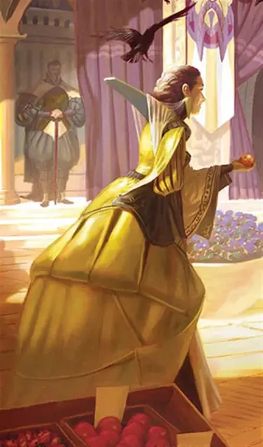

Амелия Кассалантер
Ammalia Cassalanter
Средний Гуманоид (Человек), законно-злой, именной НИП

Класс Доспеха 12 (15 с доспехами мага)
Хиты 45 (10к8)
Скорость 30 футов
| мод | спас | ||
|---|---|---|---|
| СИЛ | 9 | −1 | −1 |
| ЛОВ | 14 | +2 | +2 |
| ТЕЛ | 11 | +0 | +0 |
| мод | спас | ||
|---|---|---|---|
| ИНТ | 17 | +3 | +6 |
| МДР | 12 | +1 | +4 |
| ХАР | 15 | +2 | +2 |
Навыки История +6, Магия +6, Проницательность +4, Убеждение +5
Иммунитет к урону яд
Иммунитет к состояниям отравление
Чувства пассивное Восприятие 11
Языки Общий, Драконий, Инфернальный, Эльфийский
Опасность 5 (1800 опыта)
Бонус мастерства +3
Особенности
Использование заклинаний. Амелия является заклинателем 9-го уровня. Её базовой характеристикой является Интеллект (Сл спасброска от заклинания 14, +6 к попаданию атаками заклинаниями). У неё подготовлены следующие заклинания волшебника:
• Заговоры (неограниченно): дружба [friends], волшебная рука [mage hand], починка [mending], сообщение [message]
• 1 уровень (4 ячейки): очарование личности [charm person], доспехи мага [mage armor], волшебная стрела [magic missile]
• 2 уровень (3 ячейки): удержание личности [hold person] , невидимость [Invisibility], внушение [suggestion]
• 3 уровень (3 ячейки): огненный шар [fireball], ускорение [haste], языки [tongues]
• 4 уровень (3 ячейки): смятение [confusion], каменная кожа [stoneskin]
• 5 уровень (1 ячейка): удержание чудовища [hold monster]
Действия
Боевой посох. Рукопашная атака оружием: +2 к попаданию, досягаемость 5 футов, одна цель. Попадание: 2 (1к6 - 1) дробящего урона, или 3 (1к8 - 1) дробящего урона если используется двумя руками.
Описание
Тщеславная хозяйка дома Кассалантер знает толк в мистических искусствах. Как и её муж Викторо, она поклоняется Асмодею. В молодости Амалия и Викторо подписали договор с архидьяволом, продав души своих детей за власть, здоровье и долголетие. Душу Освальдо, их старшего сына, забрали немедленно, и он превратился в цепного дьявола. Души их младших детей, близнецов Теренцио и Эльзерины, заберут, когда им исполнится девять лет.
Дополнительное условие договора позволяет Кассалантерам выкупить их, но это требует колоссальной суммы денег и массового жертвоприношения несчастных. Пока Викторо рыщет в поисках клада Дагульта Неверембера, Амалия готовится провести пир в честь Дня Основателей, на котором гостей отравят.
Амалия хорошо воспитана, начитанна, много путешествовала и крайне хитра. Говорят, что с ней трудно сторговаться. Она увлекается изучением бабочек и устроила у себя в поместье прекраснейший сад с бабочками. Младшим детям она позволяет играть в этом саду под её присмотром.